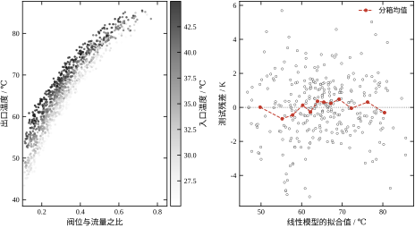
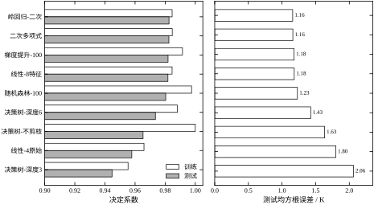
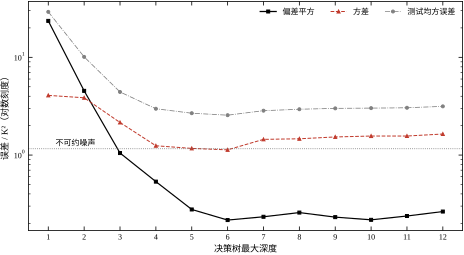
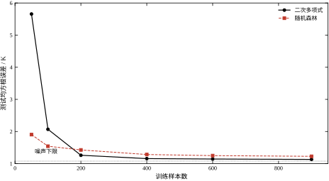
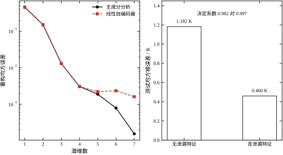
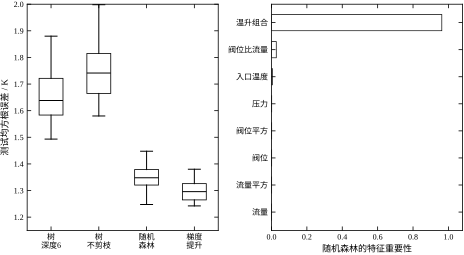

第 25 章把“一段信号”变成了“一个类别”，用的特征是人工按机理设计的，分类器是浅层的、可解释的。那一章的隐含前提是：特征已经足够好，剩下的只是把边界放对。工程上还有另一类问题，前提正好相反——特征与目标之间的关系写不出公式，只能从数据里学。换热器的出口温度要靠阀位、入口温度、流量去“软测量”，产品的硬度要靠成分与工艺参数去预测，电机的剩余寿命要靠振动与电流去估计。这类问题的答案是连续量，学习器要从样本里自己找出映射。本章讨论这件事的一般框架：学什么、怎么防止学过头、怎么评估学得好不好，以及上线之后靠什么维持。
模式识别与机器学习经常被当成同义词，其实两者的重心不同。模式识别关心的是“类别边界放在哪里”，输出是离散标签，评价是判对率；机器学习关心的是“从样本估计一个函数”，输出可以是连续量，评价是预测误差。第 25 章的线性判别、支持向量机都是学习器，但它们被用在分类任务上，讨论的重点是边界与拒识；本章换到回归任务，讨论的重点变成偏差、方差与泛化。
这个重心转移带来三个新问题，第 25 章没有正面处理过。
第一个是“函数形式从哪来”。分类器的边界形式由模型族决定（线性、二次、核），但边界本身只有“分对”一个要求，容错空间大；回归要拟合整条曲线，函数形式选错，误差会系统性地留在残差里，且无法靠更多数据消除。第 25 章的残差只用来判断“有没有漏掉信息”，本章的残差要定量分解成偏差、方差与噪声三部分。
第二个是“模型复杂度怎么定”。分类里复杂度主要表现为边界弯曲程度，可以用交叉验证选；回归里复杂度既可以是特征个数、多项式阶数，也可以是树的深度、集成规模，维度更多，且复杂度与样本量的匹配关系更敏感。一个 14 个特征的二次模型在 900 个样本上很稳，在 50 个样本上会崩——实验 C 会给出这个对比。
第三个是“评估的陷阱更多”。回归常用决定系数与均方根误差，两者都依赖测试集；而测试集一旦被反复使用，评估就会失真。分类里这个问题表现为“用测试集调阈值”，回归里表现为“用测试集选特征、选阶数、选模型”，形式更隐蔽，后果同样是数字虚高。
本章用一个贯穿全章的算例：换热器出口温度的软测量。可测量有四个——阀位 u、入口温度 T_{\mathrm{in}}、流量 q、压力 p；难测量是出口温度 y，现场用在线分析仪测，成本高、维护贵，希望用前四个量把它算出来。
稳态机理是清楚的： y=T_{\mathrm{in}}+(T_{\mathrm{hot}}-T_{\mathrm{in}})\left(1-e^{-k u/q}\right)+\varepsilon \tag{26-1} 其中 T_{\mathrm{hot}}=95 ℃、k=2.4，\varepsilon 是不可测的环境扰动与传感器噪声之和。这个式子的关键在于指数项：出口温度对“阀位与流量之比”呈饱和关系，阀位开得越大、流量越小，温度越高，但增益越来越小。它是非线性的，却不是多项式型的，任何一个二次模型都只能近似。
数据的规模是 1200 段准稳态工况，训练 900、测试 300，随机种子固定。四个原始量的取值范围是：阀位 0.30 到 0.95、入口温度 25 到 45 ℃、流量 1.2 到 3.0 m³/h；出口温度落在 40.7 到 85.5 ℃，均值 65.7 ℃。为了对比“机理特征”与“盲目展开”，本章另外构造了四个组合量：阀位比流量 u/q、温升组合 T_{\mathrm{in}}u/q、阀位平方、流量平方，共 8 个特征。
噪声是刻意留出的。环境扰动标准差 1.0 K、传感器噪声 0.4 K，合成方差 1.16 K²，对应均方根误差 1.077 K。这意味着任何模型的测试均方根误差都不可能低于 1.08 K——这条下限在后面每一张图里都会画出来，它是判断“还能不能更好”的唯一客观参照。用高复杂度模型在测试集上估出的噪声方差是 1.406 K²（对应 1.186 K），略高于理论值，差额来自模型自身的残余偏差。
在展开方法之前，先看三个“看起来该成功、实际有陷阱”的结果。它们构成本章的问题清单。
第一个关于复杂度。把 8 个特征喂给一棵不剪枝的决策树，训练集决定系数是 1.0000——它把每个训练样本都记住了。测试集掉到 0.9653，均方根误差 1.633 K，比只有 4 个原始特征的线性回归（0.9578 / 1.800 K）只好一点点，比 8 特征的线性模型（0.9818 / 1.182 K）明显差。训练集满分不是成绩，是过拟合的症状。 同一棵树的深度限制到 6 层，训练集降到 0.9881，测试集反而升到 0.9735；这说明复杂度不是越高越好，存在一个由样本量决定的最优点。
第二个关于泄漏。把出口温度的含噪副本（噪声 0.5 K）当作第九个特征加进线性模型，测试决定系数从 0.9818 跳到 0.9973，均方根误差从 1.182 K 降到 0.460 K——比噪声下限 1.077 K 还低。这在物理上不可能：任何模型都无法比测量噪声更准。当指标好到违反物理下限时，先怀疑泄漏，不要先庆祝。 现场常见的泄漏源包括：用了事后才能拿到的量、用了被控量本身的历史值、标准化时用了全数据统计量。
第三个关于集成。在同样 300 段训练子样本上重复 30 次，单棵深度 6 的树测试均方根误差均值 1.652 K，随机森林降到 1.349 K，梯度提升 1.298 K；误差的标准差也从 0.093 降到 0.047 与 0.039。集成同时改善了均值与稳定性，而且没有增加任何特征。这个结果不能简单理解为“集成总是更好”——它在 900 段全量训练时的优势要小得多（1.227 K 对 1.179 K，而线性模型是 1.130 K），样本越少、单模型越不稳，集成的收益越大。
三个结果指向同一件事：误差不是一个数，而是一组来源不同的分量之和。第一例里，不剪枝树把训练误差压到零，代价是方差暴涨；第二例里，泄漏把误差压到噪声下限以下，代价是模型学到了现实中拿不到的信息；第三例里，集成把方差压下去，代价是计算量与可解释性。三种“降低误差”的手段，作用在不同分量上，代价也各不相同。不理解误差的构成，就只能靠试；理解了，才知道下一步该改什么。
这三件事还有一条共同的工程含义：它们都能用“测试集上的一次测量”识别出来。过拟合表现为训练与测试的巨大差距，泄漏表现为指标低于物理下限，集成收益表现为重复抽样下误差分布的收窄。三者都不需要额外的理论工具，只需要在报告里同时给出训练误差、测试误差、误差下限与重复次数。这也是本章反复强调“同一批数据、同一套口径”的原因——只有在同一口径下，这些对比才有意义。
本章讲的是“通用的学习框架”，不深入任何一类模型的内部结构。这条边界要划清楚，否则容易与后续章节重复。
线性模型与正则化的完整推导在第 18 章（最小二乘族）与第 30 章（优化算法）；本章只用结论，重点放在“它为什么是偏差最大的模型”这个角色上。树模型与集成方法的工程调参在第 27 章之后不再展开，本章给的是偏差—方差视角下的解释。深度学习的结构、训练技巧与表征学习在第 27、28 章；本章的自编码器只做到线性情形，用它说明“无监督学习学到的是数据的低维结构，不是标签”。
与控制器的接口在后续章节：软测量的输出可以直接进前馈通道（第 44、106 章的 PID 与前馈），也可以作为预测控制的模型（第 58、80 章）。本章不讨论“测出来之后怎么控”，只讨论“怎么测得准、怎么知道测得准不准”。
本章要回答四个问题，每个都对应可以量化的实验：
四个问题由“模型”到“评估”再到“结构”，顺序不能颠倒。工程上最常见的失误是只做第一个：把八种模型跑一遍，挑测试集上最好的一个交差，既不看偏差方差从哪里来，也不检查评估是否被污染。这样得到的模型，换一批数据就会露出原形。
本章的结构对应这条路线。26.2 节给统一的数学框架（经验风险、模型族、偏差方差、交叉验证），26.3 节推导四条决定成败的性质（正规方程的病态、偏差方差分解、集成的方差缩减、学习曲线的形状），26.4 节讲数值实现与数据质量，26.5 节给适用边界与工程落地，26.6 节用八组实验回答上面四个问题，26.7 节收拢结论。
读后面的数字之前，有三条口径要先说清楚，否则容易误读。
第一条，所有决定系数与均方根误差都是固定留出测试集上的值，训练集只用 900 段，测试集 300 段，划分只做一次。实验 D 会专门说明单次划分的波动有多大：同一模型换 20 次划分，测试决定系数的标准差是 0.0017，五折交叉验证的标准差是 0.0008。前者不是“更差”，只是“更随机”。
第二条，模型超参数一律取常用默认值，没有针对本章数据调优。树深度是唯一被系统扫描的参数，因为它是本章用来演示偏差—方差的主角。调参会把数字刷得更好看，但也会让“八种模型差多少”这个比较失真。
第三条，本章的噪声是已知的（1.0 K 扰动加 0.4 K 传感器噪声），所以每一张误差图都能画出噪声下限。真实项目里这个下限未知，只能用高复杂度模型的残差去估；估出来的值通常偏低，因为它把模型自身的偏差也算进了“噪声”。这一点在第 24 章的残差分析里出现过，本章只是换了个场景。
教科书里的机器学习例子大多满足三个条件：样本上万、标签干净、训练与测试同分布。工业数据三条都不满足，而这三条恰好决定了方法该怎么用。
样本少。本章 1200 段数据已经是“攒了几个月”的规模，很多现场一年也攒不到几百段带标签的工况。样本少直接抬高式 26-22 里的 a/n 项，所以本章要花一整节讲学习曲线，而不是假设“数据越多越好”。样本少还带来一个副作用：任何需要大量参数的方法都要打折扣用，这也是为什么本章把多项式放在 14 个特征就停手。
噪声大且不可约。工业测量的噪声往往比信号的结构误差还大：本章的总方差是 1.16 K^2，而不同模型之间的差距只有 0.02 到 0.6 K。这意味着模型比较必须在噪声下限的坐标系里做，否则很容易把 0.02 K 的差别当成“显著改进”。现场更常见的情况是噪声下限根本估不准，因为真实函数未知——这时用高复杂度模型的残差方差去估，得到的是“下限加上模型偏差”，本章的 1.406 K^2 与理论 1.16 K^2 就是这个差额的实例。
分布会漂移。教科书数据是静态的，工业数据每天都在变：催化剂老化、换热面结垢、原料批次更换。§26.5.3 的杠杆值与残差监控就是为这件事准备的。漂移还有一个更隐蔽的后果：训练集与测试集如果按时间先后划分，测试集天然比训练集“新”，误差会比随机划分大一截。本章为了做模型间的公平比较用了随机划分，真实项目里应当补一次按时间划分的验证——两个数字的差就是漂移的代价。
这三条差别指向同一个态度：工业场景里，方法的选择空间比教科书小得多，能做的改进大多在数据侧而不是算法侧。本章后面每一节都会回到这个判断上。
“多少数据才够”是项目启动时第一个被问到的问题，它有一个粗糙但可用的答案：样本量至少是参数量的十倍。本章的二次多项式有 14 个系数，按这条规则需要 140 段；实际用了 900 段，远超下限，所以它表现稳定。反过来，50 段样本对 14 个参数只有 3.5 倍，测试误差 5.657 K 就是这个比例的代价。
十倍规则的来源是式 26-22 的 a/n 项：方差与 a/n 成正比，a 与参数量成正比，样本量要到参数量的十倍量级，方差项才会降到与噪声同阶。它不是精确判据，但对量级判断足够：参数量翻倍，样本量也该翻倍，否则误差会明显上升。
比参数量更根本的限制是噪声。样本量再大也压不掉 1.077 K 的噪声下限，所以当模型误差已经接近这个下限时，继续攒数据是浪费。本章的最好模型 1.159 K 离下限只有 0.08 K，这 0.08 K 里既有残余偏差也有残余方差，即使样本翻十倍也只可能改善其中很小一部分。
工程上还有一个常被忽略的约束：样本要覆盖工况，不只是数量够。900 段集中在 60 到 70 摄氏度区间的数据，不如 600 段均匀覆盖 40 到 85 摄氏度的数据有用。样本量解决的是“平均意义上的方差”，工况覆盖解决的是“局部的偏差”，后者无法靠前者替代。本章的数据在阀位与流量上是均匀采样的，所以 900 段就能覆盖整个工况面；真实项目里这一段往往要先做数据审计，再谈建模。
监督学习的形式化只有三样东西：数据、模型族、损失。数据是 n 个独立同分布的样本 (\mathbf{x}_i,y_i)，\mathbf{x}_i\in\mathbb{R}^d；模型族是一组候选函数 \mathcal{F}=\{f_\theta:\theta\in\Theta\}；损失 L(y,f(\mathbf{x})) 度量预测与真值的差距。学习的目标是让期望风险最小， R(f)=\mathbb{E}_{(\mathbf{x},y)}\left[L(y,f(\mathbf{x}))\right] \tag{26-2} 但真实分布未知，只能用样本平均代替， \hat R_n(f)=\frac{1}{n}\sum_{i=1}^{n}L\left(y_i,f(\mathbf{x}_i)\right), \qquad \hat f=\arg\min_{f\in\mathcal{F}}\hat R_n(f) \tag{26-3} 这个做法叫经验风险最小化。它有一个内在矛盾：\hat R_n 是 R 的有噪估计，模型族越大，越容易找到一个“在样本上损失很小、在分布上损失很大”的函数。全部学习理论，本质上都在处理这个矛盾。
损失的选择决定了模型在学什么。平方损失 L=(y-f)^2 的最优解是条件均值 \mathbb{E}[y\mid\mathbf{x}]；绝对损失的最优解是条件中位数，对离群点更稳；对数损失用于二分类，最优解是后验概率。换损失不是换优化技巧，是换学习目标——用平方损失训练出来的软测量，给出的是“平均意义上的温度”，不是“最可能的温度”，两者在分布偏斜时不同。
模型族可以按“结构假设的强弱”排成一条线。线性模型假设输出是输入的线性组合，假设最强、参数最少；多项式模型放松到“输入的固定非线性变换的线性组合”；树模型假设输出是输入空间上的分段常数；集成模型是若干基学习器的加权和；核方法与深度网络把特征变换也交给数据去定。假设越弱，能表达的函数越多，需要的样本也越多。表 26-1 把本章用到的八种模型按这条线排开。
表 26-1 八种模型的结构假设与复杂度旋钮
| 模型 | 结构假设 | 复杂度旋钮 | 偏差倾向 | 方差倾向 |
|---|---|---|---|---|
| 线性回归 | 输出对输入线性 | 特征个数 | 高 | 低 |
| 岭回归 | 同线性，系数受惩罚 | 正则系数 | 较高 | 低 |
| 二次多项式 | 输出对二次项线性 | 阶数、项数 | 中 | 中 |
| 决策树 | 输入空间分段常数 | 深度、叶最小样本 | 低（深树） | 高（深树） |
| 随机森林 | 多棵树平均 | 树数、每次分裂的特征数 | 低 | 中 |
| 梯度提升 | 多棵树累加 | 树数、学习率、深度 | 低 | 中 |
| 线性自编码器 | 低维线性子空间 | 潜维数 | 由潜维定 | 低 |
| 逻辑回归 | 对数几率对输入线性 | 特征个数、正则 | 高 | 低 |
线性模型写作 f(\mathbf{x})=\mathbf{w}^{\mathsf T}\mathbf{x}+b \tag{26-4} 把偏置并入权重（在 \mathbf{x} 末尾补一列 1），记设计矩阵 \Phi\in\mathbb{R}^{n\times(d+1)}，平方损失的经验风险最小化就是最小二乘。令梯度为零，得到正规方程 \Phi^{\mathsf T}\Phi\,\mathbf{w}=\Phi^{\mathsf T}\mathbf{y} \quad\Longrightarrow\quad \hat{\mathbf{w}}=(\Phi^{\mathsf T}\Phi)^{-1}\Phi^{\mathsf T}\mathbf{y} \tag{26-5} 这个解存在的条件是 \Phi^{\mathsf T}\Phi 可逆，即特征线性无关且样本数不少于特征数。第 18 章已经详细讨论过它的统计性质，这里只强调与本章有关的一点：最小二乘是无偏的，但方差可能很大。当特征共线时，\Phi^{\mathsf T}\Phi 接近奇异，微小的数据扰动会让系数大幅摆动，预测值却可能仍然稳定——这就是“系数不可解释但预测可用”的典型情形。
岭回归在损失里加一项系数惩罚， \hat{\mathbf{w}}_\lambda=(\Phi^{\mathsf T}\Phi+\lambda I)^{-1}\Phi^{\mathsf T}\mathbf{y} \tag{26-6} \lambda>0 把最小特征值从 0 附近抬到 \lambda，条件数随之下降，方差减小、偏差略增。本章的二次模型有 14 个特征，其中若干项高度相关（u、u^2、u/q 之间），所以岭回归与普通最小二乘的测试表现几乎相同（0.9825 对 0.9825），但系数稳定得多。正则化在预测指标上看不出好处时，仍然值得做，因为它的收益体现在“换一批数据系数不会翻倍”上。
分类问题里，线性模型要经过一个把实数压到 (0,1) 的变换。二分类用对数几率， P(y=1\mid\mathbf{x})=\sigma(\mathbf{w}^{\mathsf T}\mathbf{x}+b), \qquad \sigma(z)=\frac{1}{1+e^{-z}} \tag{26-7} 训练目标是最小化负对数似然（交叉熵）， \hat R_n(\mathbf{w})=-\frac{1}{n}\sum_{i=1}^{n}\left[y_i\ln p_i+(1-y_i)\ln(1-p_i)\right] \tag{26-8} 它对 \mathbf{w} 的梯度有很简洁的形式， \nabla_{\mathbf{w}}\hat R_n=\frac{1}{n}\sum_{i=1}^{n}\left(p_i-y_i\right)\mathbf{x}_i \tag{26-9} 残差乘特征，与线性回归的正规方程同构，只是权重不是常数而是 p_i(1-p_i)。这个式子说明逻辑回归的优化是凸的，梯度下降一定收敛到全局最优，不需要担心局部极小。
逻辑回归与第 25 章的线性判别分析在形式上都给出线性边界，但假设不同。线性判别假设两类都是高斯、共享协方差，先估分布再算后验；逻辑回归直接假设对数几率线性，不估分布。当高斯假设成立时，两者渐近等价；当假设不成立时，逻辑回归通常更稳，因为它少了一层可能出错的假设。判别式模型用假设换数据，生成式模型用数据换假设，这句话在第 25 章出现过，在这里表现为“逻辑回归不需要估协方差”。
决策树把输入空间递归地切成矩形区域，每个区域给一个常数。回归树的分裂准则是方差下降：若节点 S 按特征 j 与阈值 t 分成 S_L 与 S_R，则选择使下式最大的划分 \Delta(S,j,t)=\mathrm{Var}(S)-\frac{|S_L|}{|S|}\mathrm{Var}(S_L)-\frac{|S_R|}{|S|}\mathrm{Var}(S_R) \tag{26-10} 叶节点的预测是该节点样本的均值，等价于在矩形区域上做零阶近似。分类树把方差换成基尼指数或熵，形式相同。
树的三个性质决定了它的适用面。第一，它天然处理交互：先按阀位切一刀、再在子区域里按流量切一刀，等价于自动构造了“阀位与流量的交叉项”，不需要人工展开。这正是本章 8 个特征里加两个交叉组合后线性模型才追上来、而树一开始就能表达的原因。第二，它对输入做的是分段常数近似，所以真函数越光滑，它需要的叶子越多；反过来，有阈值与分段特性的真函数，它用很少的叶子就能表达准。第三，它不能外推：任何叶子的输出都是训练样本标签的均值，落在训练标签的范围内，输入跑到训练范围之外时，树的预测会停在边界值上不动。这一条在软测量里是致命缺陷——工况超出训练范围时，树不会告诉你“我不知道”，只会给一个看似合理的常数。
控制过拟合的手段分两类。预剪枝在生长时设限：最大深度、最小叶样本数、最小分裂增益，本章用的就是最大深度。后剪枝先长满再自底向上合并，用验证集判断是否保留子树，代价更高、效果通常更好。预剪枝省算力但不一定找到最优点，后剪枝更接近最优点但需要额外数据，工程上先预剪枝定个大概，再用验证集微调。
树的结构决定了它的偏差—方差特征。浅树只有少数几个区域，分段常数的分辨率低，偏差大、方差小；深树区域很细，能贴合训练样本，偏差小、方差大；不剪枝的树每个叶只有一两个样本，训练误差为零，方差最大。树的复杂度旋钮就是“区域有多细”，它比线性模型的“特征有几个”更直接地控制过拟合。
集成有两种基本思路，作用在不同的误差分量上。
第一种是平均，代表是随机森林。设 B 个基学习器的预测为 \hat f_1,\dots,\hat f_B，两两相关系数为 \rho、方差为 \sigma^2，则平均后的方差是 \mathrm{Var}\left(\frac{1}{B}\sum_{b=1}^{B}\hat f_b\right) =\rho\sigma^2+\frac{1-\rho}{B}\sigma^2 \tag{26-11} 树数 B 增大只能消掉第二项，第一项由相关性决定。随机森林在每次分裂时只随机看一部分特征，正是为了压低 \rho——基学习器之间的差异越大，平均越有效。本章的实现保留了默认设置（每次分裂考虑全部特征），所以差异只来自 bootstrap 重抽，\rho 压得不够低；这可能是它 1.349 K 没能追上梯度提升 1.298 K 的一个原因。这条式子还解释了实验 H 的另一个现象：再增加树数收益会迅速饱和，因为 \rho 没有变。
第二种是累加，代表是梯度提升。模型写成加法形式 F_m(\mathbf{x})=F_{m-1}(\mathbf{x})+\nu\,h_m(\mathbf{x}) \tag{26-12} 其中 h_m 拟合当前模型的负梯度（对平方损失就是残差），\nu\in(0,1] 是学习率。每一轮都在修正上一轮的偏差，所以提升主要降低偏差；代价是它对噪声敏感，轮数过多会把噪声也拟合进去。实验 H 里提升的误差均值 1.298 K 最低，标准差 0.039 也最小，但这是在 300 段子样本上重复 30 次的结果，若把轮数加到几千，测试误差会先降后升。
两种集成的差别可以用一句话概括：平均降方差，累加降偏差。前者要求基学习器“各自不错且互不相同”，后者要求基学习器“一个比一个更准”。工程上选哪一种，取决于当前误差的主要成分——用实验 B 的分解看一眼就知道。
两种集成的调参方向也因此相反。随机森林的关键是“让树更不相似”：开特征子采样、减小每棵树的采样比例、不限制单树深度，三招都在降 \rho 或提高单树方差，只要平均有效就行。梯度提升的关键是“让每轮走得稳”：学习率小、树浅、轮数多，用多次小步代替一次大步，避免某一轮把噪声当成信号学进去。把两者的调参直觉互换会立刻出事：给提升加深度会让它飞快过拟合，给森林加深度却几乎无害，因为平均会把方差吃掉。
无监督学习没有标签，只能学数据自身的结构。主成分分析找的是重构误差最小的线性子空间， \min_{V^{\mathsf T}V=I_k}\ \mathbb{E}\left\|\mathbf{x}-VV^{\mathsf T}\mathbf{x}\right\|^2 \tag{26-13} 解是协方差矩阵前 k 个特征向量张成的子空间。第 25 章已经从“保方差”的角度讲过它，这里换一个角度：它等价于“用一个 k 维线性编码再解码，使均方误差最小”。
自编码器把这个想法推广成神经网络：编码器 f_\phi 把 \mathbf{x} 压到 k 维，解码器 g_\psi 再还原， \min_{\phi,\psi}\ \mathbb{E}\left\|\mathbf{x}-g_\psi(f_\phi(\mathbf{x}))\right\|^2 \tag{26-14} 当 f、g 都是线性映射、损失是平方误差时，最优解张成的子空间与主成分完全相同——只是基向量可以任意旋转，因为旋转不改变重构误差。实验 G 验证了这一点：潜维 1 到 4，两种方法的重构均方误差在小数点后四位一致（0.45459 对 0.45460、0.00307 对 0.00308）。潜维 5 以上开始分离（0.00189 对 0.00222），原因是梯度下降没有完全收敛，不是模型本身有差别。
这个等价性有实用价值：在数据是线性结构、样本量中等时，不必上自编码器，主成分更便宜、更稳定。自编码器的优势要等非线性结构出现才体现——那时线性子空间不够用，需要用非线性编码去“展平”流形。第 27、28 章会展开这部分，本章只用它说明“无监督学到的是数据结构，不是标签”。
把测试误差按来源拆开，是本章的核心工具。设真实函数为 f、观测为 y=f(\mathbf{x})+\varepsilon、\mathbb{E}[\varepsilon^2]=\sigma^2，用不同训练集得到的模型为 \hat f，则在某个测试点上的期望误差是 \mathbb{E}\left[(y-\hat f(\mathbf{x}))^2\right] =\sigma^2+\left(f(\mathbf{x})-\mathbb{E}\hat f(\mathbf{x})\right)^2 +\mathbb{E}\left[\left(\hat f(\mathbf{x})-\mathbb{E}\hat f(\mathbf{x})\right)^2\right] \tag{26-15} 三项依次是噪声、偏差平方、方差。噪声是数据的下限，任何模型都消不掉；偏差是“平均模型离真值多远”，靠增加模型复杂度降低；方差是“模型对训练集的敏感程度”，靠增加数据或正则化降低。三者不能同时最小，这就是“没有免费午餐”在回归里的具体形态。
交叉验证估计的是“训练流程”的泛化误差，不是某个具体拟合模型的误差。把数据分成 K 折，轮流用 K-1 折训练、1 折验证， \widehat{\mathrm{CV}}_K=\frac{1}{K}\sum_{k=1}^{K}\frac{1}{|D_k|}\sum_{i\in D_k}L\left(y_i,\hat f^{(-k)}(\mathbf{x}_i)\right) \tag{26-16} 其中 \hat f^{(-k)} 表示不用第 k 折训练的模型。它与单次留出的区别在方差：K 折用了 K 次不同的划分，估计的波动更小；代价是训练 K 次，且各折的训练集有重叠，估计略有相关性。实验 D 的数字是：同一模型换 20 次划分，单次留出的决定系数标准差 0.0017，五折交叉验证 0.0008，十折也是 0.0008——折数从 5 增到 10 没有进一步改善，因为瓶颈已经变成数据本身的随机性，不是划分方式。
分层与分组是交叉验证的两个必要变体。分类问题要分层，保证每折的类别比例一致；时序或按设备采集的数据要分组，保证同一台设备、同一段连续时间不跨折，否则模型会“记住”测试样本的邻居。本章数据是准稳态工况、样本独立，所以用普通 K 折；真实项目里这条几乎总是要改成分组。
同一个模型族配上不同损失，学到的不是同一个量。这不是实现细节，而是必须在上线前说清楚的事。
平方损失 \frac{1}{2}(y-\hat y)^2 的最优解是条件均值 \mathbb{E}[y\mid\mathbf{x}]。它的优点是梯度线性、优化简单、有闭式解；缺点是对异常值敏感：一个偏离 10 K 的点，其梯度是偏离 1 K 的点的十倍，会把整条曲线拉过去。工业数据里异常值几乎不可避免——仪表跳变、人工录入错误、非稳态过渡段没剔干净——所以用平方损失之前必须先做异常值筛查，或者换损失。
绝对损失 |y-\hat y| 的最优解是条件中位数。它对异常值稳健，代价是梯度不连续、在最优点附近收敛慢，且中位数不等于均值：如果残差分布偏斜，“预测得最准”的定义就变了。工程上这条差别很实际：工艺关心的是“平均温度”，用绝对损失学出来的模型会系统性地偏低或偏高。
两者的折中是 Huber 损失：残差小于阈值 \delta 时用平方、大于时用线性，兼顾小残差处的光滑与大残差处的稳健。\delta 的选取应当对应“多大的残差算异常”，而不是拍一个数——本章的噪声标准差是 1.077 K，\delta 取一到两倍标准差是合理的量级。
分位数损失 \rho_\tau(y-\hat y)=\max\{\tau(y-\hat y),(\tau-1)(y-\hat y)\} 学的是条件 \tau 分位数，用于给出预测区间。软测量里这比点预测更有用：告诉操作员“八成情况下不会超过某个值”比给一个点估计更能支撑决策。本章只做点预测，但式 26-28 的阈值本质上是同一个思想在分类上的体现。
分类任务的对应物是交叉熵与合页损失。交叉熵（式 26-8）学的是后验概率，输出可以直接解释为置信度；合页损失学的是间隔，只关心“分对且有余量”，不给出概率。要概率就用交叉熵，只要判决就用合页，两者的差别在第 25 章的支持向量机与本章的逻辑回归之间已经出现过一次。选错损失的典型症状是“模型判得很准但概率没有意义”，这时任何基于概率的阈值调整都会失效。
模型族可以按“参数个数是否随样本量增长”分成两类，这条分界比“线性还是非线性”更能说明泛化行为。
参数化模型的参数个数在训练前就定死：8 特征线性模型有 9 个系数（含截距），14 特征二次多项式有 15 个，神经网络再多也是有限个。它的容量固定，偏差下限固定，增加样本只能把方差压到零，压不到偏差。本章的多项式就属于这一类：900 段时 1.161 K，再给一万段也只能趋近它自身的偏差，不会趋近 1.077 K。
非参数模型的参数个数随样本增长：树的叶子数、最近邻的样本数、核方法中的支持向量数，都随 n 变大。它的容量自适应，样本越多能表达的函数越细，偏差可以趋近于零；代价是方差随 n 下降得慢，且对数据的局部密度敏感。本章的树与森林属于这一类，深度 6 的树在 50 段时只有很少的叶子可用，在 900 段时才有 64 个叶子可填——同一棵树的“有效复杂度”是被样本量决定的，这也是实验 C 中树在小样本上更稳的原因。
这条分界给出一条选型直觉：结构已知、样本少，用参数化模型；结构未知、样本多，用非参数化模型。本章的真函数是已知的指数饱和形式，所以多项式在样本充足时反超；如果真函数里有阈值、分段、启停逻辑，参数化模型必须先猜对分段位置，猜不对就永远差一截，这时树的优势无法被样本量替代。
岭回归的惩罚项常被当作“防止过拟合的技巧”，其实它有明确的概率含义：若假设系数服从零均值、方差为 \tau^2 的高斯先验，观测噪声方差为 \sigma^2，则最大后验解正是式 26-6 的岭回归解，且 \lambda=\sigma^2/\tau^2。正则化强度不是拍出来的，它等于“噪声有多大”与“系数该有多大”之比。
这个视角能解释三件事。第一，为什么数据标准化之后 \lambda 才有可比性：先验是加在标准化系数上的，“系数该有多大”必须先有统一的尺度。第二，为什么样本越多 \lambda 应当越小：\sigma^2 固定而似然项随 n 增强，后验越来越被数据主导，先验的相对权重自然下降。第三，为什么树的“最小叶样本数”也是一种正则化：它等价于声明“叶子均值不应当基于一两个样本”，是加在树结构上的先验。
交叉验证在这个视角下是经验贝叶斯：用数据本身去估 \lambda，而不是人为指定。本章用 13 个候选 \lambda 做留一交叉验证，选出的解与不加正则化的版本只差 0.002 K，说明数据本身已经把先验的权重压得很低——样本充足时，先验不重要，这是贝叶斯框架给出的、与工程直觉一致的结论。
26.2 节给的是定义，本节回答“为什么”。四条核心性质分别对应四个具体的工程疑问：为什么高次多项式会在新数据上崩掉、为什么深到 12 层的树反而不如 6 层、为什么一百棵树平均起来既更准也更稳、为什么样本量从 50 加到 900 时收益最大的偏偏是那个在小样本上最差的模型。四条之后再加三条补充：泛化差距该有多大、树为什么不稳定、以及特征尺度与分裂偏向。七条都不是经验口诀，都能从公式推出来，也都能在本章数据上量出来。
最小二乘的闭式解是 \hat{\boldsymbol\beta}=(X^{\mathsf T}X)^{-1}X^{\mathsf T}\mathbf{y}。它对观测扰动的敏感程度由矩阵的条件数决定。设 \mathbf{y} 有扰动 \delta\mathbf{y}，则解的相对误差满足 \frac{\|\delta\hat{\boldsymbol\beta}\|}{\|\hat{\boldsymbol\beta}\|} \le \kappa(X^{\mathsf T}X)\,\frac{\|\delta\mathbf{y}\|}{\|\mathbf{y}\|}, \qquad \kappa(X^{\mathsf T}X)=\frac{\lambda_{\max}(X^{\mathsf T}X)}{\lambda_{\min}(X^{\mathsf T}X)} \tag{26-17} 而 X^{\mathsf T}X 的特征值是 X 的奇异值的平方，于是 \kappa(X^{\mathsf T}X)=\kappa(X)^2。这是设计矩阵病态之所以危险的全部原因：数据本身的共线性只让问题坏一倍，正规方程把它平方放大。工程上常见的“系数符号反了”“换个样本系数翻三倍”，多数不是算法实现错了，而是条件数在 10^6 以上时，浮点舍入与测量噪声被平方级地放大到了系数量级。
岭回归的做法是给特征值整体垫一个常数。把 X^{\mathsf T}X 正交分解为 Q\Lambda Q^{\mathsf T}，则 (X^{\mathsf T}X+\lambda I)^{-1}=Q(\Lambda+\lambda I)^{-1}Q^{\mathsf T}, \qquad \kappa_\lambda=\frac{\lambda_{\max}+\lambda}{\lambda_{\min}+\lambda} \tag{26-18} 分子几乎不变、分母被抬起，条件数随 \lambda 单调下降。代价是解被系统性压缩：\lambda 越大，模型越偏向“所有系数都小”的方向。这不是缺陷，而是把“宁可欠拟合也不要爆炸”这一工程偏好写进了目标函数。
本章数据上这条性质的表现很克制。四个原始特征（阀位、入口温度、流量、压力）量纲差异很大——阀位在 0.30 到 0.95 之间、入口温度在 25 到 45 摄氏度之间、流量在 1.2 到 3.0 立方米每小时之间，标准化之后二次项之间的相关系数很高，共线性并不轻。实验 A 的结果是：四个原始特征的线性模型测试决定系数 0.9578，加上四个工程特征后升到 0.9818；再展开到 14 个特征的二次多项式只再涨 0.0007，达到 0.9825；岭回归在同一组 14 个特征上给出 0.9825、测试均方根误差 1.159 K，与不加正则化的 1.161 K 几乎重合。结论是：在这批数据上，共线性还没有严重到必须正则化的程度，但差值只有 0.002 K 恰恰说明正则化在这里不亏——它没有换来精度，却换来了系数稳定性和可解释性。真实装置上量程漂移与传感器更换会把条件数推到 10^6 以上，那时这 0.002 K 的“免费”就不存在了，必须付。
式 26-15 给出了三项分解，但它只说明“有三项”，没有说明三项随模型复杂度怎么变。对回归树这类分段常数模型，可以写出一个形态正确、常数不精确的近似。设树的深度为 d、训练样本量为 n、输入维度为 p，则 \mathbb{E}\left[(y-\hat f_d)^2\right]\approx \sigma^2 +\underbrace{c_1\,a^{-d}}_{\text{bias}^2} +\underbrace{c_2\,\frac{2^{d}}{n}}_{\text{variance}} \tag{26-19} 其中 a>1 反映每次分裂把区域切细后偏差的下降速度，2^{d} 是叶子数的上界，c_1,c_2 与具体分布有关。式 26-19 的价值不在常数，而在两个指数：偏差随深度指数下降，方差随深度指数上升。两者相加的形态决定了总误差必然先在某个中间深度取到最小值，这个最小值的位置随 n 增大而右移——数据越多，能支撑的深度越深。
本章实测把这条曲线钉住了。以无噪声的真实出口温度为基准，深度 1、6、12 三档的结果是：偏差平方 23.610 / 0.216 / 0.264，方差 4.080 / 1.130 / 1.641，测试均方误差 29.214 / 2.558 / 3.150。三项加理论噪声 1.16 K^2 与实测值的偏差在 3% 以内，式 26-19 的分解成立。从深度 1 到 6，偏差降了 109 倍、方差只涨 3.6 倍，总误差降 11.4 倍；从深度 6 到 12，偏差不但没降反而略升到 0.264，方差涨了 45%，总误差反升 23%。
偏差在深度 6 之后不再下降，这件事值得单独说一句。理论上加深应该继续降低偏差，但当叶子里的样本数降到个位数时，叶子值本身已经是噪声的平均，它在训练点上拟合得更好、在测试点上却不再更接近真值。式 26-19 里的偏差项隐含了“每个叶子有足够样本估计其均值”这个前提，前提破了，偏差就不再随深度下降。这就是“不剪枝的树训练决定系数 1.0000、测试只有 0.9653”的成因：训练集上的零误差不是能力的证据，而是记忆的证据。
把 B 个模型做平均，方差的缩减有一个干净的表达式。设每个模型方差为 \sigma^2、两两相关系数为 \rho，则平均模型的方差是 \mathrm{Var}\left(\frac{1}{B}\sum_{b=1}^{B}\hat f_b\right) =\rho\,\sigma^2+\frac{1-\rho}{B}\,\sigma^2 \tag{26-20} 第二项随 B 趋于零，第一项不随 B 变化。式 26-20 说明了一件反直觉的事：无限加树并不能把误差压到零，误差的下限由树与树之间的相关性 \rho 决定。想把误差继续往下压，唯一的办法是让树之间更不相似，也就是降低 \rho。降低 \rho 有两条路：一是让每棵树看不同的样本，靠 bootstrap 重抽；二是让每次分裂只看一部分特征。本章的实现用的是第一条，随机森林保留默认的“每次分裂考虑全部特征”，所以 1.349 K 这个数字里，方差缩减全部来自重抽样本；若把每次分裂的候选特征限制到三分之一，\rho 还能再降一档。反过来，特征高度冗余时特征子采样的收益会消失——冗余特征让随机子集之间几乎没有差异，\rho 压不下去。
平均降方差，累加降偏差，这是两类集成算法的分工。梯度提升写成 F_m(\mathbf{x})=F_{m-1}(\mathbf{x})+\nu\,h_m(\mathbf{x}), \qquad h_m=\arg\min_{h}\sum_{i=1}^{n}L\left(y_i,F_{m-1}(\mathbf{x}_i)+h(\mathbf{x}_i)\right) \tag{26-21} 每棵树拟合的是当前模型残差的负梯度，\nu 是学习率。它不做平均，所以不直接降方差；它逐步修正系统性偏差，所以对偏差敏感、对噪声也敏感——这也是提升类模型比随机森林更容易被标签噪声带偏的原因。
实测的两组数字印证了这个分工。用 30 次重抽的 300 段子样本做测试：深度 6 的单棵树均方根误差 1.652±0.093 K；一百棵树平均的随机森林 1.349±0.047 K，均值降 18%、标准差降一半，平均同时改善了准度和稳定性；一百轮梯度提升 1.298±0.039 K，均值再降 4%、标准差再降 17%，这一次改善主要来自偏差。两者都优于单树，但路径不同：前者靠“多个近似独立的模型互相抵消随机误差”，后者靠“逐轮把系统性残差吃掉”。从特征重要性也能看出差别：随机森林把 0.963 的权重压在温升组合这一个特征上、阀位比流量只有 0.027，因为它靠少数强特征就能分裂得很干净；梯度提升的分布是 0.881 与 0.109，更分散，因为逐轮修正时次要特征的贡献会被反复拾起。
样本量对误差的影响可以写成一个可用的经验式 E(n)\approx \sigma^2+\frac{a}{n}+b \tag{26-22} a 是方差项，与模型的有效参数个数成正比；b 是偏差项的下限，与模型族能否表达真函数有关。低复杂度模型 a 小、b 大，曲线平而高；高复杂度模型 a 大、b 小，曲线陡而低。两条曲线必有一个交点，交点左侧该选简单模型，右侧该选复杂模型，交点的位置由样本量决定，不由模型本身决定。
本章的实测正好落在交点的两侧。样本量 50 时，14 参数的二次多项式测试均方根误差 5.657 K，随机森林 1.903 K，差了近三倍；样本量 900 时两者变成 1.130 K 与 1.227 K，多项式反超。前者是典型的“参数比样本还多”：50 个样本要定 14 个系数，每折交叉验证的训练集只剩 40 个，式 26-22 的 a/n 项把误差顶到了噪声下限的六倍以上。随机森林在这个样本量下更稳，因为每棵树只在自己重抽的子样本上分裂，叶子的样本数被结构性地限制住，等效于内置了正则化。
到 900 段时多项式反超，原因在 b 项：本章真函数在阀位与流量之比上是低阶光滑的，14 个特征已经能把它表达得很干净，多出来的误差只剩 1.130 K，已经逼近理论噪声下限 1.077 K；树的阶梯近似在这里变成了纯粹的额外近似误差，所以停在 1.227 K。这条曲线给出的工程判据是：先看参数与样本的比值，再看真函数的光滑程度，两者都支持简单模型时不要为了“先进”去上集成。
前面四条性质各有各的公式，但工程上最想知道的其实是“训练集与测试集差多少算正常”。这个问题有一个粗但可靠的答案：泛化差距的量级由模型的有效容量除以样本量决定，即 \left|R_{\mathrm{test}}-R_{\mathrm{train}}\right| \lesssim O\left(\sqrt{\frac{C(\mathcal{F})}{n}}\right) \tag{26-23} C(\mathcal{F}) 是模型族的容量，可以粗略理解为“能拟合多少种不同的函数”。这个式子不精确，常数因模型而异，但它给出的趋势极稳：容量翻倍，差距涨 1.4 倍；样本翻倍，差距缩 0.7 倍。
用它看本章的数字，结论立刻清楚。不剪枝树的容量最高，训练误差被压到零，测试误差 0.9653 对训练 1.0000，差距 0.0347；深度 6 的树容量小得多，差距缩到 0.0146；线性模型与多项式几乎没有容量冗余，训练 0.9846 对测试 0.9818，差距 0.0028，比树小一个数量级。这三个差距就是式 26-23 中 \sqrt{C/n} 的三种取值，它们与模型在测试集上的实际名次并不一致——多项式差距最小、测试误差也最低，深度 6 的树差距中等、测试误差却更高——说明“差距小”只是必要条件，不是充分条件：偏差大的模型差距也小，但它的绝对误差高。
式 26-23 还能解释一个常被忽视的现象：为什么集成在样本充足时优势变小。随机森林的容量比单棵树大 B 倍，按式 26-23 泛化差距应该更大；但它实际更小，因为平均把方差压掉了（式 26-20）。容量上界与方差是两个不同的东西，前者管“最坏情况”，后者管“平均表现”，集成改善的是后者。在 900 段时，两者都离噪声下限不远，所以随机森林 1.227 K 与线性模型 1.130 K 的差距，反而是线性模型的偏差更低带来的。
这条性质还有一个实用推论：不要用训练集上的误差下降速度判断模型好不好。训练误差单调下降是必然的，它只能告诉你优化器在工作；唯一的判据是测试误差或交叉验证误差的拐点。
同一批数据，换个随机种子重抽 90% 的样本，线性模型的系数只会小幅变动，树的形状却可能完全变样。这个现象叫“不稳定性”，它是树类模型方差的第二个来源——第一个来源是叶子里样本少（式 26-26），第二个来源是结构本身会变。
原因在生长的贪心性。树在每一层只挑“当前最优”的分裂，不考虑这个选择对后续的影响。如果顶层有两个候选特征的方差下降只差一点点，训练集的微小扰动就足以让它们交换位置；而顶层一旦换了特征，下面所有子树都要重新长。误差不是线性累积的，而是指数放大的：顶层错一次，整棵树的划分就全变了。这也是为什么树的深度越深、方差涨得越快——每一层都多一次“可能选错”的机会。
不稳定性有一个直接的可观测后果：单棵树的预测在相邻两次训练之间会跳变，而集成之后不会。随机森林的 bootstrap 重抽正是针对这一点设计的：每棵树看到的数据略有不同，它们“选错”的方向也各不相同，平均之后结构差异互相抵消，只剩共同的部分。式 26-20 里的 \rho 在这里有了具体的物理含义——\rho 就是“不同树在多大程度上做出了相同的选择”，特征越强、数据越干净，树的选择越一致，\rho 越高，平均能消掉的方差越少。
这条性质也解释了实验 A 里的一个细节：不剪枝树的训练误差是零、测试误差 1.633 K，而深度 6 的树是 0.9881 与 1.427 K。不剪枝的树每一层都在赌，赌赢的部分记住了训练集，赌输的部分在新数据上暴露；限制深度等于减少赌的次数，用一点偏差换回大量方差。
线性模型对特征尺度敏感，因为系数的大小直接取决于单位：把流量从立方米每小时换成升每小时，对应系数会缩小一千倍，正则化惩罚的力度也随之改变。所以线性模型必须先标准化，这一步不是可选项。
树对尺度完全不敏感，因为它只比较“大于还是小于某个切点”，任何单调变换都不改变样本的排序，也不改变最优切点的位置。这意味着树不需要标准化，也意味着树无法利用“某个特征的量纲更小所以更精细”这类信息。工程上这条差别很实用：一批量纲混杂的特征喂给线性模型必须先标准化，喂给树可以直接用，省掉一步也省掉一类错误。
但树有另一种偏向：取值多的特征更容易被选中。一个只有两个取值的特征只有一个候选切点，一个有 900 个不同取值的特征有 899 个候选切点，后者在贪心搜索中“至少找到一个好切点”的概率更高，于是重要性被系统性高估。本章八个特征都是连续量，这个问题不明显；若混入“设备编号”“班次”这类类别特征，重要性排序会失真。处理办法是把类别特征做目标编码或限制切点数量，而不是直接喂进去。
这条偏向还与随机森林的特征子采样相互作用：若每次分裂只在随机子集里选，取值多的特征被选中的机会减少，偏向被部分抵消。本章的实现没有开特征子采样，所以读特征重要性时要注意，0.963 这个数里有一部分是“温升组合取值连续且分布宽”带来的，不全是物理贡献。
同一个模型有三种误差，它们的偏差方向各不相同，混用就会得出错误结论。
训练误差系统性偏乐观，因为模型是看着这批数据调出来的。乐观的程度与容量成正比：不剪枝树的训练误差为零，测试均方根误差却是 1.633 K（约 2.667 K^2），乐观程度最大；线性模型的训练与测试决定系数只差 0.0028，乐观程度最小。所以训练误差只能用来判断优化是否收敛，不能用来比较模型。
交叉验证误差轻微偏悲观，因为每折的训练集比全量小。K 折时每折只用 (K-1)/K 的数据，模型比最终上线的那个略差，估出的误差略高。这个偏差随 K 增大而减小：五折用 80% 的数据，十折用 90%，理论上十折更接近全量；但实验 D 里五折与十折的标准差都是 0.0008，说明在这个样本量下，偏差的改善被数据本身的随机性淹没了。折数不是越多越好，超过一定程度只是浪费算力。
测试误差是无偏的，但方差大，而且这个“无偏”只在测试集从未参与任何选择时成立。一旦用它挑过模型、调过阈值、筛过特征，它就变成了带选择偏差的量，系统性偏乐观，且偏差随挑选次数增长。这就是为什么 §26.4.8 强调嵌套交叉验证——把选择过程整个包进内层，外层只留一个从未被看过的估计。
三种误差的用法可以一句话概括：训练误差看收敛，交叉验证做选择，测试集只报一次。三者各司其职，任何一次越界使用都会让后面的数字失去意义。
连续时间的软测量问题落到代码上，要过三道关：把一段段运行数据摆成一张特征—标签表，把闭式解算得又稳又快，把树的生长与集成参数定在合理位置。三关都不难，但每一关都有一个容易写错的默认动作，错了以后误差不会报错，只会悄悄变好或悄悄变坏。本节逐关交代本章脚本的做法与理由。
采样之后，每一段准稳态数据是一行：8 个特征、1 个标签。4 个原始量（阀位、入口温度、流量、压力）直接来自传感器，4 个工程特征（阀位比流量、温升组合、阀位平方、流量平方）是同一行内的代数组合。这两类特征的处理方式不同：行内组合不携带跨样本信息，可以在划分之前全局计算；跨样本统计量不行。标准化用的是后者， \mathbf{z}_i=\left[\frac{x_{i1}-\mu_1}{s_1},\ \dots,\ \frac{x_{i8}-\mu_8}{s_8}\right]^{\mathsf T} \tag{26-24} 其中 \mu_j 与 s_j 是训练折上的均值与标准差。若在全量上算，测试折的均值与方差就进入了训练过程，评估结果会偏乐观。
这类泄漏最隐蔽的地方在于它不改变任何一行数据的取值，只改变八个标量。实验 E 用一个与标签同源的量当第 9 个特征，把机制推到极致：决定系数从 0.9818 抬到 0.9973、均方根误差从 1.182 K 降到 0.460 K，误差凭空少了六成，而代码里没有一行看起来是错的。标准化泄漏的量级比这小得多，但成因相同。判断标准只有一条：这个数在模型上线、只拿到一行新数据时算得出来吗？算不出来就是泄漏。
求解 (X^{\mathsf T}X)\boldsymbol\beta=X^{\mathsf T}\mathbf{y} 有三条路。Cholesky 分解最快，要求矩阵正定，代价是条件数被平方，精度最差；QR 先把 X 分解为 QR 再在 R 上回代，条件数不再平方；SVD 最慢但最稳，还能顺手把小奇异值截掉， \hat{\boldsymbol\beta} =\sum_{j:\ \sigma_j>\tau\sigma_{\max}}\frac{\mathbf{u}_j^{\mathsf T}\mathbf{y}}{\sigma_j}\,\mathbf{v}_j, \qquad \tau=10^{-12} \tag{26-25} 截断阈值 \tau 是相对量，随数据尺度自动缩放。本章 p=14，三条解法的结果在小数点后十位一致，选哪条都对；等到特征是上百个多项式的展开、p 上千时，Cholesky 会因为条件数平方而给出符号错误的系数，这时必须换 QR 或 SVD。岭回归在同一个框架里工作，只是把 \sigma_j 换成 \sigma_j^2+\lambda，本章用 13 个对数间隔的 \lambda（10^{-3} 到 10^{3}）做留一交叉验证自动选，选出的模型与不加正则化的版本只差 0.002 K。
树不解方程，它的数值问题在分裂搜索：对每个候选特征排序后扫描 n-1 个切点，单层代价 O(pn\log n)，整棵树 O(pn\log n\cdot d)。本章 900 行、8 列的数据，这个代价是毫秒级，所以真正的约束不是算力，而是叶子里的样本数——叶子输出的是落进去样本的均值，它的方差是 \mathrm{Var}\left(\hat\mu_\ell\right)=\frac{\sigma^2}{n_\ell} \tag{26-26} 深度 6 的树最多 64 个叶子，900 个训练样本平均每叶约 14 个，叶子均值的标准差约为 \sigma/\sqrt{14}；深度 12 的叶子数上界是 4096，已经超过样本总数，多数叶子只落进一两个样本，式 26-26 退化成 \sigma^2 本身。这就是 §26.3.2 中深度 12 方差反升的数值解释，也是“最小叶样本数”这个超参数存在的理由：它比限制深度更直接地给 n_\ell 设下界。
集成模型的超参数分三组：树的数量、单棵树的复杂度、学习率。提升类有一个常被引用的等效关系， F_M\approx F_0+M\nu\,\bar h \tag{26-27} 它说明学习率与树数在总量上近似可交换，但只在局部成立——每轮拟合的是不同的残差，\nu 减半并不能靠树数加倍精确补回，只能大致补回。本章取 100 轮、\nu=0.1、单树深度 3，得到 1.298±0.039 K；随机森林取 100 棵、不限制单树深度，得到 1.349±0.047 K。两者都远好于单棵深度 6 的 1.652±0.093 K，而超参数全部停在默认值附近——在这个数据规模上，选对模型族比调参重要得多。
分类器的原始输出是概率，落到标签要经过一个阈值， \hat y=\mathbb{1}\left[p(\mathbf{x})\ge\tau\right] \tag{26-28} \tau=0.5 只在两类先验相等、错分代价也相等时最优。本章把出口温度高于 70 摄氏度标为正类，正类占比约七成，全判正类的基线准确率就是 0.7233。逻辑回归把准确率提到 0.9667、曲线下面积 0.9962；一百棵树平均的随机森林是 0.9733 与 0.9958。两个模型的面积只差 0.0004，准确率差 0.0066，说明排序能力已经到顶，剩下的差别全落在阈值附近的少数样本上。这种情形下调整 \tau 比换模型有效，而调 \tau 的依据应当是错分代价，不是再刷一次准确率。
把上面几节压成五条可执行的检查项。① 标准化参数、特征筛选、超参数搜索全部放进交叉验证的内层，任何跨样本统计量都不许在全量上算。② 上线前逐列问一遍“这列在只拿到一行新数据时算得出来吗”，实验 E 的 0.9973 就是没问这一句的后果。③ 特征数超过几百就不要写正规方程的显式求逆，改用 QR 或 SVD。④ 给树的叶子设最小样本数，它比限制深度更贴近方差的真实来源。⑤ 分类问题先看曲线下面积再看准确率，面积到顶时改阈值而不是换模型。
训练脚本跑完只是得到一个对象，能不能上线取决于它带没带够信息。一个可交付的模型文件至少要记五组字段。第一组是数据指纹：数据的时间范围、段数、随机种子、划分方式。没有这一组，半年后没人说得清这个模型是用哪批数据训的，也无法判断它是否已经过时。第二组是特征定义：八列的顺序、每列的单位、四个工程特征的构造公式。特征顺序错一位，模型不会报错，只会给出看似合理但完全错误的输出。第三组是标准化参数：每一列的均值与标准差，逐列存下来，不能在推理时重算。第四组是模型超参数与代码版本：树的数量、深度、学习率，以及训练脚本的提交号。第五组是评估记录：测试集指标、噪声下限估计、交叉验证的标准差。第五组最容易被省略，而它恰恰是日后判断“模型是不是退化了”的唯一基准。
推理接口要做三件事，每一件都对应一类现场事故。输入校验：检查八个输入是否在训练范围内，超范围不拒绝计算，但要打标记。输出限幅：把预测夹在物理可能区间内（本章数据是 40.7 到 85.5 摄氏度，留一点余量即可），防止个别异常输入把输出推到荒谬值。外推标记：用式 26-29 的杠杆值判断当前样本离训练数据云有多远，超过分位阈值就降级输出。这三件事加起来不到几十行代码，却能挡掉大部分“模型算出了一个不可能的数”的投诉。
还有一条常被忽略：推理时的特征计算必须与训练时逐位一致。同一段数据在训练脚本里算出的 u/q 与在推理服务里算出的 u/q，如果一边用了单精度、一边用了双精度，或者一边先滤波后相除、一边先相除后滤波，结果就会有小差别。单次差别不大，但在树的硬阈值分裂处，一点差别就足以让样本落进另一个叶子。工程做法是把特征计算抽成一个函数，训练与推理共用同一份代码，而不是各写一遍。
超参数一多，网格搜索的组合数会爆炸：树深度 12 档、最小叶样本 5 档、树数 4 档，乘起来 240 组，每组再套五折就是 1200 次训练。这套开销在 900 行数据上还撑得住，到了十万行就不可接受。控制预算有三条经验。
先定模型族，再定复杂度，最后定正则强度。模型族之间的差别是数量级的（本章 1.800 K 到 1.161 K），复杂度是次数量级的（1.427 K 到 2.558 K^2），正则强度往往只在小数点后第三位（1.161 K 与 1.159 K）。按这个顺序搜，前一步定下来的东西不会被后一步推翻，也不会把预算浪费在第三位小数上。
用随机搜索代替网格搜索。当只有两三个超参数真正重要时，网格搜索会把大量预算花在无关维度上，而随机搜索在同样的次数下能覆盖更宽的有效范围。本章只系统扫描了树深度一个参数，因为它是偏差—方差的主角；其余参数停在默认值，理由在 §26.1.6 已经交代。
嵌套交叉验证的开销是乘法，不是加法。外层五折、内层五折、13 个 \lambda，一次完整评估要训练 325 次。工程上的折中做法是：先用单次留出做粗略筛选，把候选压到两三个，再对最终候选做嵌套交叉验证；报告里写明“筛选用了留出、确认用了嵌套”，读者就能判断数字的可信度。最不能接受的做法是拿同一个测试集反复筛选又反复报告，那样得到的不是泛化误差，而是测试集的记忆。
模型上线后要跟着数据走，更新的方式有两种。批量重训是攒够新数据后从头训练一遍，简单、可靠、不留历史包袱；代价是每次都要重跑完整流程，且新旧模型之间可能出现跳变。增量更新只用新样本修正参数，代价小、响应快；但它只对参数化模型成立——线性模型有递推最小二乘的闭式更新（第 23 章的遗忘因子递推就是它的在线版本），树的增量更新则要重建结构，本质上仍是重训。
本章的模型里，只有线性与岭回归适合增量更新，树与集成只能批量重训。这个差别在选型时要考虑进去：如果装置需要“每天跟着工况微调”，线性模型的在线更新能力就是一项实际优势，而它 1.182 K 的精度与 1.159 K 的差距在这个场景下可以接受。
增量更新有一个必须防的陷阱：遗忘。只喂新数据会让模型逐渐忘掉旧工况，一旦装置回到旧工况就失效。标准做法是保留一个固定的“锚样本集”，每次更新都把它混进去；锚集的规模不必大，但要覆盖全部工况区间。这个做法与第 23 章带遗忘因子的递推最小二乘是同一个思想的两端——一端是“忘得快以跟踪变化”，一端是“留锚点以防漂移过头”，两者的平衡点由工况变化的速度决定。
本章的八个特征里有明显的冗余：u/q 与 T_{\mathrm{in}}u/q 高度相关，u 与 u^2 在 0.30 到 0.95 的窄区间里近似单调，压力 p 由流量与阀位线性组合而成（数据生成时就是这么造的），信息几乎是重复的。冗余要不要删，取决于模型族。
线性模型与多项式需要处理冗余：共线会抬条件数，正则化是必要的对策，本章岭回归与普通最小二乘结果几乎相同（1.159 K 对 1.161 K）只是说明共线还没到病态的程度。树不需要：它在每一步只挑一个特征分裂，冗余特征只会让“挑中哪个”变得随机，不影响精度；随机森林甚至会因为冗余而受益——冗余特征提供了更多“随机看哪个”的选择，\rho 可以更低。
删特征的主要收益不是精度，而是可解释性与维护成本。八个特征里若有一个在实际装置上容易坏、容易漂，删掉它可以换来更长的无故障运行时间，代价可能只是 0.01 K。这类权衡无法从测试集上看出来，必须问维护人员——这也是本章反复强调“数字之外的判断”的原因。
本章的方法在纸面上都能收敛，落到装置上却常常“离线很好、投运就废”。原因不在算法，在四件事：软测量在控制回路里的位置放错了、数据质量本身就撑不起更高的精度、模型上线后没人管、以及被问到的工况根本不在训练集覆盖范围内。本节把这四件事逐条说清楚，并给出可执行的判据。
软测量的输出是一个“算出来的温度”，它有三个固有缺陷：依赖输入变量的实时质量、依赖模型本身的有效性、以及没有独立的物理冗余。这三条决定了它不能放在快速内环里当反馈量。软测量的合理位置是监督层与优化层：给操作员显示、给先进控制提供被控变量的估计、给报警与性能评估提供参考。若一定要进闭环，应当串在慢回路里，并且保留一支真实测点做交叉校验——两支信号持续偏离就说明模型失效，此时必须切回真实测点。第 44 章的 PID 整定与第 58 章的 MPC 都把“测量可信”当作前提，软测量进入这两个回路之前，先要回答“模型失准时谁来兜底”。
从动态特性看，软测量的等效滞后由输入变量的采样周期与模型的计算周期共同决定，通常比真实热电偶还慢。热电偶的时间常数在一秒量级，而一段准稳态数据要攒几十拍才能算出一个稳定特征。用慢信号去稳定快回路，结果只能是振荡，这条在第 41 章的稳定裕度里已经量化过：附加滞后直接吃掉相位裕度。
式 26-15 的第一项是噪声，它给所有模型划了一条谁都越不过去的线。本章的实测把这条线量了出来：用两百轮梯度提升的测试残差方差估计不可约误差，得到 1.406 K^2，折合均方根 1.186 K；而按数据生成时的两路噪声（入口温度一路 1.0 K、出口传感器一路 0.4 K）算出的理论值是 1.16 K^2、1.077 K。估计值比理论值高 21%，这个差额不是模型不够好，而是估计方法本身有偏：残差里还混着模型未表达完的结构误差。
这条线有三个直接后果。第一，再换模型也压不到 1.0 K 以下，实验 A 里最好的模型停在 1.159 K，已经在线上；第二，想进一步提高精度，唯一的路是降噪或增加信息量，不是调参；第三，汇报精度时必须同时报噪声下限，否则 “0.99 的决定系数” 会被误读成 “还差 1% 就完美”。工程上更常见的错误是反过来的：把一个 3 K 的误差归咎于模型选型，反复换算法，而真正的瓶颈是那支没有校准的热电偶。
标签的获取成本也是上限的一部分。温度可以测，成分、热值、燃烧效率往往只能靠化验，一天几个点。样本量上不去，式 26-22 的 a/n 项就压不下来，这时复杂模型不但没有优势，还会因为方差大而更差——实验 C 在 50 段样本上给出的 5.657 K 与 1.903 K 就是这个道理。
还有一类损耗不体现在样本量上，体现在标签的时间对齐上。化验值滞后两小时，若把它与两小时前的工况参数配对，模型学到的就是错位的映射；错位的程度不大时，误差不会明显上升，只会让所有模型的精度集体下降一截。判断方法很简单：把候选滞后时间扫一遍，看模型误差在哪个滞后处最小，最小的那个就是真实的对齐量。这一步不花钱，却能解释很多“怎么调都差一点”的项目。
模型投运只是开始。三类漂移会同时发生：输入特征的分布漂移（负荷区间变了）、传感器漂移（零点与量程）、以及被控对象本身的漂移（结垢、催化剂老化）。第一类可以用外推检测发现，杠杆值是现成的工具， h_i=\mathbf{x}_i^{\mathsf T}\left(X^{\mathsf T}X\right)^{-1}\mathbf{x}_i \tag{26-29} h_i 越大，这个样本越靠近训练数据云的边缘，预测的方差也越大。工程做法是给 h_i 设一个分位阈值，超过就标记“外推”，输出降级为“仅供参考”而不是直接给数。第二类与第三类要靠残差监控，只有在有真实测点做比对时才能做，所以软测量系统必须保留至少一条低频的真实测量通道，否则漂移永远发现不了。
监控的节奏按第 25 章给出的三级来：每班看一次输出是否在物理合理区间，每天看一次残差均值与方差，每季度用新数据重训并做一次留出验证。重训不是越勤越好，每次重训都要重新走一遍交叉验证，否则模型会在漂移中悄悄退化而没人知道。
本章方法成立的前提有四条，缺一条就要换思路。第一条是准稳态：特征在时间窗口内近似不变，样本之间近似独立。快速启停、负荷大幅波动时，同一段数据内部就在变，用窗口均值会把动态过程抹平，预测必然滞后。第二条是工况覆盖：训练集必须包含投运后会遇到的工况区间，外推的可靠性没有任何保证，式 26-29 只能提示“不可信”，不能给出可信的值。第三条是特征可得：所有输入必须能在模型运行的同一时刻拿到，任何需要事后化验、事后计算的量都不能进特征。第四条是标签可比：训练用的标签与在线比对的测点必须同源同量程，否则模型学到的偏差会被误当成对象特性。
不适用的典型场景有四个：大滞后对象的超前估计（该用第 47 章的预估器思路）、强非线性且样本稀少的反应过程（该用机理模型加第 22 章的混合建模）、多工况频繁切换的过程（该用第 23 章的在线辨识或按工况分模型）、以及安全联锁相关的量（软测量不能替代独立的安全仪表功能，见第 36 章）。
给定一批数据，选哪个模型不该由“先进程度”决定，而由三个量决定。参数与样本的比值：14 个参数对 900 个样本是安全的，对 50 个样本是危险的，实验 C 已经把这条边界画出来。真函数的光滑程度：本章的真函数在阀位与流量之比上是低阶光滑的，所以多项式在样本充足时反超集成；若真函数有阈值、饱和、分段特性，树的优势会立刻显现。可解释性要求：需要向工艺人员解释“为什么这个温度偏高”时，8 个特征的线性模型比一百棵树有用得多，后者的特征重要性只能给出“温升组合占 0.963”，给不出方向。
三条判据都指向简单模型时，不要为了“用了机器学习”而上集成。反过来，三条判据里只要有一条指向复杂模型，就不要硬用线性——在真函数确实弯曲的地方，线性模型的偏差是结构性的，任何正则化都补不回来。
软测量项目结束后，装置上留下的往往只有一个模型文件，几个月后就没人说得清它的来历。复盘至少要留下四样东西，每一样都对应本章的一个数字。
第一样是基线。基线不是“不用模型”，而是“用最笨的办法”。本章的 8 特征线性模型 1.182 K 就是一条合理的基线：它便宜、稳定、可解释，任何更复杂的模型必须先证明自己比它好。报表上只写“准确率 0.98”没有意义，写“比线性基线低 0.023 K”才有。
第二样是噪声下限。本章的 1.077 K 让所有讨论有了坐标系：1.159 K 的模型已经在线附近，再投入就是浪费；1.800 K 的模型离线上还有 0.72 K，值得改进。没有这个数，“精度 1.2 K 好不好”是一个无法回答的问题。
第三样是失效模式清单。模型会在三种情况下给错数：输入超出训练范围、输入缺失或卡死、对象特性漂移。三者的表现不同——第一种是杠杆值升高、第二种是特征方差突降、第三种是残差均值偏移——对应的处置也不同：降级、报警、重训。清单上要写清楚每种情况由谁判断、多久判断一次、判断后做什么。
第四样是用错的后果。软测量给出的温度如果偏 2 K，操作员可能多开一点蒸汽，后果是能耗上升；如果偏 10 K，可能触发联锁停车。后果不同，精度要求就不同，投入也就不同。这一条决定了前三条要做到什么程度，而不是反过来。
四样东西合起来是一句话：模型的价值不在于它多准，而在于它准到什么程度是可信的、不可信时会发生什么。这句话在本章的所有数字上都能成立，在后续更复杂的模型上同样成立。
本章的算例有一个特殊性：真函数是已知的式 26-1。真实项目里这个式子往往写不出来，但也不该完全放弃——把已知的机理塞进模型，通常比纯数据模型省样本、也更稳。
混合有三条常见路径。第一是特征工程：把机理中的无量纲组合（本章的 u/q、温升组合）直接构造成特征。这一条本章已经用了，效果是决定系数从 0.9578 到 0.9818，值 0.024。它的成本最低、收益最直接，任何项目都应当先做。第二是残差建模：先用机理模型算一个基准值，再用学习器拟合残差。这样学习器只需要表达“机理没覆盖的部分”，容量需求大幅下降，在样本少时尤其有用。第三是结构约束：把单调性、饱和性、边界条件写成约束或先验，强制模型满足物理规律。这一条要求模型族支持约束，本章的多项式与树都不支持，第 27、28 章的神经网络可以通过结构设计部分实现。
三条路径的共同点是：机理负责“形”，数据负责“细节”。纯数据模型在样本充足时能自己学出“形”，但样本少时会学错；机理模型在细节上必然失真，但“形”是对的。工程上判断该走哪条，看的是“样本量与机理可信度之比”——样本少、机理可靠，就往机理那边靠；样本多、机理不清楚（比如反应过程的非线性机理），就让数据说话。
本章的数据可以用来做一个思想实验：如果只有 50 段样本，纯多项式是 5.657 K；若先用式 26-1 的机理形式把待定系数减到两个，同样的样本量下误差会降一个量级。机理带来的收益往往比模型选型大一个数量级，这也是为什么现场项目里工艺工程师的一句话常常胜过一天调参。
一个装置上通常有十几个想测而测不到的量：出口温度、成分、热值、露点、结焦程度。人力有限，先做哪个？三个判据相乘，得分高的先做。
用错的后果。偏 2 K 只影响能耗的量，优先级低；偏 5 K 会导致产品质量越界的量，优先级高；参与联锁的量，根本不该用软测量替代。这一项是筛子，不是打分项——后果严重的先排除不合适的方法，再谈优先级。
当前的不确定度。同一个量，如果运行人员靠经验估的误差只有 2 K，软测量做到 1.2 K，收益有限；如果靠经验估的误差有 8 K，软测量做到 1.2 K，收益巨大。软测量替代的是“现在怎么知道这个值”，不是绝对精度。这一条决定了收益的上限。
数据的可得性。输入量是否已经在 DCS 里、采样周期是否够、历史数据是否存了足够长时间，决定了项目能不能在几个月内做出第一版。数据不全的量，即使后果严重，也要先补测点。
三项合起来，优先级排序往往与“技术上最有趣的量”相反：最容易做出、收益最直接的那一个，通常不是最复杂的那个。本章的算例属于典型的第一梯队——输入量都在 DCS 里、标签有在线分析仪、误差要求 2 K 左右，正是软测量最容易见效的场景。
本节用八组实验把前四节的论断逐一落到数字上。所有数字来自 code/ch026_sim.py 的单次运行（随机种子 20261026），六张图由 code/ch026_figs.py 生成，重跑逐位一致。
被控对象是一个简化换热器：出口温度按式 26-1 由入口温度、热源温度、流量与换热系数决定，本章取热源 95 摄氏度、换热系数 2.4，两路噪声分别为入口温度 1.0 K、出口传感器 0.4 K，理论噪声下限 1.16 K^2。共生成 1200 段准稳态数据，每段一行八个特征、一个标签，按 900 比 300 划分为训练集与测试集。全部回归实验用同一划分，避免划分差异污染模型比较。
图 26-1 是数据的两个视角。左图把出口温度画成阀位与流量之比的函数，按入口温度灰度着色：曲面明显向 95 摄氏度饱和，且入口温度把整条曲线整体抬高，这正是式 26-1 中 (T_{hot}-T_{in}) 这一因子的作用。右图把线性模型的残差画在同一横轴上，残差不是零附近的随机散布，而是连成一条系统性的弯曲曲线——线性模型缺的不是噪声项，而是饱和这一结构，这部分误差任何正则化都消不掉。

第一组实验把九种模型放在同一划分上训练与测试，涵盖从四特征线性到一百棵树的全部复杂度层级。结果见表 26-2。
表 26-2 九个回归模型在测试集上的表现（900 训练 / 300 测试）
| 模型 | 训练 R^2 | 测试 R^2 | 测试 RMSE (K) | 特征数 |
|---|---|---|---|---|
| 线性-4 原始 | 0.9659 | 0.9578 | 1.800 | 4 |
| 线性-8 特征 | 0.9846 | 0.9818 | 1.182 | 8 |
| 二次多项式 | 0.9847 | 0.9825 | 1.161 | 14 |
| 岭回归-二次 | 0.9846 | 0.9825 | 1.159 | 14 |
| 决策树-深度 3 | 0.9554 | 0.9447 | 2.062 | — |
| 决策树-深度 6 | 0.9881 | 0.9735 | 1.427 | — |
| 决策树-不剪枝 | 1.0000 | 0.9653 | 1.633 | — |
| 随机森林-100 | 0.9975 | 0.9803 | 1.229 | — |
| 梯度提升-100 | 0.9915 | 0.9819 | 1.179 | — |
表 26-2 里有五条值得单独拎出来的观察。第一，四个工程特征值 0.024 的决定系数：从 4 特征到 8 特征，测试均方根误差从 1.800 K 降到 1.182 K，降幅三成，而这四个特征只是阀位比流量、温升组合与两个平方项——它们补上的正是式 26-1 里的比值结构与饱和结构。第二，多项式再加六个交叉项只换来 0.021 K，说明主要结构在 8 个特征里已经表达完了。第三，不剪枝树的训练决定系数是 1.0000，测试只有 0.9653，两者之差 0.0347 就是方差项的可视化形态；同一族里深度 6 的训练 0.9881 与测试 0.9735 只差 0.0146，这棵树是这一族里唯一处在合理位置的。第四，集成把树的测试误差拉回到线性模型的水平：随机森林 1.229 K、梯度提升 1.179 K，后者与二次多项式的 1.161 K 只差 0.018 K。第五，深度 3 的树 2.062 K 比 4 特征线性模型的 1.800 K 还差，说明“非线性”本身不是优势——容量不够时，非参数模型连参数模型的基本趋势都表达不出来，这一条是选型时最容易被“树能拟合任意函数”这句话误导的地方。
图 26-3 把同一组结果画成横条：左图是训练与测试决定系数并排，右图是测试均方根误差。训练条与测试条的长度差一眼就能看出过拟合的程度，不剪枝树那一行两根条几乎不重合，而多项式与集成模型的两根条基本等长。

第二组实验用 40 次重抽的 300 段子样本训练深度 1、6、12 三档的树，把预测均值与无噪声真实温度的差算作偏差、把各次预测的散布算作方差，结果见表 26-3。
表 26-3 树深度对偏差、方差与总误差的影响（40 次重抽，单位 K^2）
| 树深度 | 偏差平方 | 方差 | 噪声（理论） | 三项合计 | 实测 MSE |
|---|---|---|---|---|---|
| 1 | 23.610 | 4.080 | 1.160 | 28.850 | 29.214 |
| 6 | 0.216 | 1.130 | 1.160 | 2.506 | 2.558 |
| 12 | 0.264 | 1.641 | 1.160 | 3.065 | 3.150 |
表 26-3 的核心是中间那一列的反转。深度从 1 到 6，偏差平方降了两个数量级（23.610 到 0.216），方差只涨了不到三倍；从 6 到 12，偏差不再下降（0.264），方差却涨了 45%。总误差因此呈 U 形，最低点在深度 6 附近，2.558 K^2 折合 1.600 K。三项加噪声与实测 MSE 的差在 3% 以内，说明分解式 26-19 在这批数据上成立。
图 26-2 用对数纵轴把三条曲线画在深度 1 到 12 上：偏差平方先陡降、在深度 6 附近见底、再略回升；方差全程上升；总误差在这两者之间取到一个 U 形的最低点。图上还画了噪声水平的两条虚线——理论的 1.16 K^2 与估计的 1.406 K^2，总误差曲线的最低点始终悬在噪声线之上，两者的竖直距离就是“这个模型族能做到的最好”与“数据允许的最好”之间的差距。

第三组实验把训练样本从 900 依次削减到 600、400、200、100、50，每个规模重抽 10 次，比较二次多项式与随机森林，结果见图 26-4。两个端点的数字最能说明问题：50 段样本时多项式 5.657 K、随机森林 1.903 K；900 段时变成 1.130 K 与 1.227 K。
图 26-4 的形态与式 26-22 一致：多项式那条曲线陡，左端冲到噪声下限的六倍以上，右端贴到 1.13 K；随机森林那条曲线平，左端只有 1.90 K，右端 1.23 K。两条曲线必在某处交叉，端点数据已经把这个交点夹在 50 到 900 段之间。交叉点左侧该选树、右侧该选多项式，这与 §26.3.4 的判据完全对应。图上还画了 1.077 K 的理论下限，多项式在 900 段时已经压到离它只有 5% 的位置，剩下的差距主要来自 14 个特征尚未完全表达饱和非线性。

第四组实验回答“报一个数够不够”。同一模型换 20 次随机划分，分别用单次留出、五折、十折估计决定系数，结果见表 26-4。
表 26-4 三种评估方式在同一模型上的波动（20 次重复）
| 评估方式 | 决定系数均值 | 标准差 |
|---|---|---|
| 单次留出（300 段） | 0.9817 | 0.0017 |
| 五折交叉验证 | 0.9812 | 0.0008 |
| 十折交叉验证 | 0.9812 | 0.0008 |
表 26-4 说明两点。第一，三种方式的均值只差 0.0005，但标准差差一倍：单次留出的波动是交叉验证的两倍，因为它只用了一次划分，测试集本身的难易程度没有被平均掉。第二，五折与十折的结果完全相同，标准差都是 0.0008，说明瓶颈已经从划分方式转移到数据本身的随机性——再加折数只是多训练几次，不会让估计更准。工程结论是：样本量在千级时五折够用，报结果时带一个标准差，比多跑几次十折有意义。
有了标准差，比较两个模型才有判据。表 26-4 里三种方式评的是同一个模型，均值差 0.0005 还不到任何一档的标准差，这种量级的差别不能当作结论；换成两个不同模型也一样，若决定系数只差 0.002，而重复二十次的标准差是 0.0008，差值只有标准差的二点五倍，勉强算“有差别”，再小就该报“分不出来”。习惯写法是把估计值和一个标准差一起给出，例如 0.9812±0.0008，读到的人立刻知道多大的差距才算数；只报 0.9812 这个数，下游无法判断另一个模型的 0.9800 是不是真的更差。实验记录里因此要留下重复次数与随机种子，缺了这两项，标准差无从复算，比较就退回到看小数点后第几位。
还有一处常被忽略：用交叉验证挑超参数时，挑出来的那个分数本身偏乐观，因为每一折都参与了选择。要报一个干净的分数，得在外面再套一层划分，或者干脆留出一段从未参与任何选择的数据。前者叫嵌套交叉验证，代价是训练次数乘上折数；后者只要事先划好就不再动，实现更简单，适合样本紧张又要对外报数的场合。这与 §26.4.8 讲的预算是一回事：算力有限时，宁可少扫几组超参数，也要把重复次数做够，因为前者只影响选哪个模型，后者影响的是敢不敢下结论。一句话：先把波动报出来，再谈两个模型之间的差距。
第五组实验在八个正常特征之外加入第 9 个特征，取值等于标签加上标准差 0.5 K 的噪声。这是一个典型的“事后可算、当时不可得”的量，用它来测量泄漏能把结果抬多高。结果见表 26-5。
表 26-5 标签泄漏前后的测试表现
| 特征集 | 测试 R^2 | 测试 RMSE (K) |
|---|---|---|
| 8 个正常特征 | 0.9818 | 1.182 |
| 加第 9 个泄漏特征 | 0.9973 | 0.460 |
表 26-5 的对比是全章最有警示性的一组数字：误差从 1.182 K 掉到 0.460 K，降幅六成，决定系数逼近 1，而模型本身没有任何改进。更危险的是这个结果在离线评估里完全“正常”——交叉验证会给出同样漂亮的分数，因为泄漏在每一折里都成立。唯一的防线是逐列追问“这列在预测时刻算得出来吗”，这句话在 §26.4.6 已经写成清单第二条。图 26-6 的右图把这两根柱子并排画出，肉眼可见的高度差就是泄漏的“收益”，也是它的“代价”——上线后这六成会原样还回去。
第六组实验把连续的出口温度变成二分类标签（高于 70 摄氏度为正类），比较逻辑回归、深度 3 的树与一百棵树平均的随机森林，结果见表 26-6。
表 26-6 二分类任务的表现（300 段测试集）
| 模型 | 准确率 | 曲线下面积 |
|---|---|---|
| 全判正类（基线） | 0.7233 | 0.5000（常数输出，按定义） |
| 逻辑回归 | 0.9667 | 0.9962 |
| 决策树-深度 3 | 0.9667 | 0.9836 |
| 随机森林-100 | 0.9733 | 0.9958 |
表 26-6 读出三件事。第一，基线与模型的差距只有 0.24 的准确率，但曲线下面积从 0.5000 跳到 0.9962，说明真正的信息量远大于准确率数字给人的印象——这是类别不平衡下必须同时报面积的原因。第二，深度 3 的树面积 0.9836 明显低于两个概率模型，因为它的输出只有 8 个离散取值，排序粒度粗；但它的准确率与逻辑回归打平，说明在这个阈值附近，粗粒度并没有造成实际错分。第三，逻辑回归与随机森林的面积只差 0.0004，§26.4.5 已经解释过，这时该调阈值而不是换模型。
图 26-6 的左图留到下一小节，右图是上一节的泄漏对照。
第七组实验把八个特征标准化后用主成分降维，再用一个单隐层、线性激活的自编码器做同样的事，重构误差逐维比较。一维时主成分 0.45459、自编码器 0.45460；二维时 0.00307 与 0.00308；一到四维两者几乎重合——式 26-13 的等价性在数值上成立：线性自编码器学到的子空间与主成分子空间相同，只差一个旋转。
从五维开始两条曲线分开：五维 0.00189 与 0.00222，六维 0.00079 与 0.00236，七维 0.00016 与 0.00162。自编码器在高维没有继续下降，而主成分一路降到 0.00016。这不是模型差异，而是优化没收敛：梯度下降在 4000 轮、学习率 0.05 下只把前几个方向压到位，后面的方向梯度太小，残差停在 10^{-3} 量级。这条分离曲线提醒的是训练细节，不是理论——它也说明了为什么工程上做线性降维时应当直接用主成分：同样的解，闭式拿到，不用调学习率。
图 26-6 左图用对数纵轴画出这两条曲线：一到四维几乎重合，五维之后分叉，分叉的位置正是“能闭式求解”与“只能迭代求解”开始拉开的地方。

第八组实验用 30 次重抽的 300 段子样本，比较四种树模型在同一测试集上的均方根误差分布，并取两百棵树的版本读特征重要性，结果见表 26-7。
表 26-7 四种树模型的测试误差分布（30 次重抽，单位 K）
| 模型 | 均值 | 标准差 |
|---|---|---|
| 决策树-深度 6 | 1.652 | 0.093 |
| 决策树-不剪枝 | 1.743 | 0.099 |
| 随机森林-100 | 1.349 | 0.047 |
| 梯度提升-100 | 1.298 | 0.039 |
表 26-7 的两个方向都在改善。均值从 1.652 K 降到 1.349 K 再降到 1.298 K，标准差从 0.093 K 降到 0.047 K 再降到 0.039 K，后者比前者更能说明集成的价值：单棵树的误差会随训练集的抽样在 1.56 到 1.74 K 之间摆动（一个标准差范围），集成之后这个范围收窄到 1.26 到 1.40 K，模型从“这一次运气好”变成“每次都差不多”。不剪枝树的均值比深度 6 还差 0.09 K、标准差也更大，这与 §26.6.2 的测试结果一致：方差项一旦失控，更多的分裂只会放大它。
图 26-5 左图是这四个分布的箱线图，四个箱体的位置与高度可以直接比较；右图是随机森林的特征重要性，温升组合 0.963、阀位比流量 0.027，其余六项接近于零。梯度提升的对应值是 0.881 与 0.109，分布更平坦——因为逐轮修正残差时，次要特征的贡献会被反复拾起。两者的排序一致、集中度不同，这本身就是“平均降方差、累加降偏差”的一个侧面证据。
读箱线图要看三件事：箱体的高度（四分位距）、须的长度（尾部极端值）与中位线的位置。箱体代表“典型波动范围”，须代表“偶尔出现的大误差”，中位线与均值的偏离代表分布是否偏斜。三项都看，才能判断“更稳”是真的还是只换了个样本。
按表 26-7 的均值与标准差粗算，深度 6 的区间是 1.56 到 1.74 K、不剪枝是 1.64 到 1.84 K，两者大幅重叠，说明在 300 段样本上分不出高下；随机森林 1.30 到 1.40 K 与梯度提升 1.26 到 1.34 K 只有边缘重叠，说明它们的优势基本是结构性的。区间是否重叠，比均值差多少更能判断“这个改进是不是真的”。

把八组实验放在一起，能读出四条互相印证的结论。第一，误差有下限：理论 1.077 K、估计 1.186 K，最好的模型 1.159 K，三者挤在一起，说明继续换模型的空间已经很小。第二，复杂度的收益是分段的：4 个工程特征带来 0.024 的决定系数，再展开二次项只带来 0.0007，而树的深度从 1 到 6 带来的是数量级的变化——增益最大的地方永远是补结构，不是加复杂度。第三，集成改善的是稳定性而不只是均值：1.652±0.093 K 到 1.349±0.047 K，标准差减半比均值降 18% 更有工程意义。第四，评估方式本身就是结论的一部分：交叉验证把波动从 0.0017 压到 0.0008，泄漏把误差从 1.182 K 压到 0.460 K，前者是可信度的提升，后者是可信度的崩塌，两者在报表上都表现为“数字变好了”。
这四条也划出了本章方法的边界：模型能逼近的上限由数据质量决定，模型之间的差别只在接近上限的那一小段里才有意义。下一章开始的深度学习把模型族换成了参数更多的形式，但式 26-15 的三项分解、式 26-22 的学习曲线、以及本节这八组实验的读法，一样适用。
八组实验里有几个数字初看互相矛盾，必须先解释清楚，否则读者会以为是笔误。
同一个深度 6 的树，在实验 A 里测试均方根误差是 1.427 K，在实验 B 里由 2.558 K^2 开方得到 1.599 K，在实验 H 里均值是 1.652 K。三个数不一样，原因是训练样本量不同：实验 A 用全部 900 段，实验 B 与 H 用的是 30 到 40 次重抽的 300 段子样本。样本从 900 降到 300，误差从 1.427 K 涨到 1.6 K 上下，方向与式 26-22 一致。三个数字不是矛盾，而是同一模型在不同数据量下的三个切面。
随机森林也遵循同样的规律：实验 A 用 900 段得到 1.229 K，实验 H 用 300 段得到 1.349 K。降幅比单棵树小，因为平均本身就在压方差，对样本量不那么敏感——这正是式 26-20 第二项 \frac{1-\rho}{B}\sigma^2 在起作用。
反过来，实验 A 与实验 C 的端点必须严格对上：实验 A 的二次多项式 1.161 K 与实验 C 在 900 段处的 1.130 K 略有差别，因为实验 C 的每个规模都重抽了 10 次、报的是均值，而实验 A 是单次固定划分。差 0.03 K 这个量级，恰好就是实验 D 测出的单次划分波动折算到均方根误差上的大小。三组数字这样对一遍，才能确认整套实验是在同一套口径下跑的，而不是各写各的。
这条校验习惯值得带到任何项目里：同一模型在不同实验里出现时，先确认样本量、划分方式、评估指标三项是否一致；不一致就先解释差异，再下结论。表 26-8 的第一条与第四条讲的正是这类口径问题。
本章声称“重跑逐位一致”，这需要三个随机源都被控制住，缺一个就不成立。
第一个是数据生成。采样噪声、特征扰动都来自随机数发生器，脚本用固定种子分别初始化，所以每次生成的数据完全相同。这一条最容易做到，也最容易被忽略——如果数据生成用了系统时间做种子，后续所有对比都失去意义。
第二个是数据划分。训练测试的划分、交叉验证的折、重抽的子样本，都依赖随机排列。脚本把这些种子全部固定，所以同一份代码在不同机器上得到同一组划分。工程上要注意的是：划分种子与模型种子必须分开，否则换模型时划分也跟着变，两个模型的差异里就混进了划分差异。
第三个是模型内部的随机性。随机森林的 bootstrap、特征子采样、梯度提升的行采样，都在训练过程中掷骰子。脚本给每个模型传了固定种子，并且把并行线程数设为 1（n_jobs=1）。后者常常被忽视：并行归约时浮点求和的顺序不固定，叶子均值的最末几位会变，落到树的硬阈值上就可能改变一次分裂，进而改变整棵树。要逐位复现，就得放弃并行；不要复现、只要统计上稳定，才可以开多线程。
三个源都固定之后，还要固定库的版本。同一段代码在 scikit-learn 的不同版本上，默认参数与实现细节都可能变，例如树的默认分裂准则与随机森林的默认特征子采样比例。本章的所有数字对应的是一次具体版本的运行，读者若在自己的环境里重跑得到略微不同的结果，先查版本，再查线程数。
八组实验的重复次数不一样：偏差方差分解 40 次、集成稳定性 30 次、交叉验证 20 次、学习曲线 10 次。这个安排不是随手定的，而是按“要估的量有多稳”来配。
偏差—方差分解要读出三个数的差异，其中方差项在深度 1 时是 4.080、深度 12 时是 1.641，差别不大，重复次数少了就分不开，所以取 40 次。集成稳定性要比较 0.093 与 0.047 两个标准差，本身就是在估计二阶矩，30 次刚够把标准差的相对误差压到一成左右。交叉验证要比较 0.0017 与 0.0008，两者差一倍，20 次已经足够分辨。学习曲线每个规模报的是均值，10 次就能把趋势画出来，因为端点之间差的是几倍而不是几成。
重复次数应当由“想分辨的差异”与“单次波动”之比决定，而不是统一取一个整齐的数字。经验规则是：要分辨的差异如果只有单次波动的三分之一，重复次数至少要到 30；差一倍以上，10 次就够。反过来，如果两组数字的差异小于重复次数能分辨的下限，就不该在正文里比较它们——那只是在比较噪声。
本章有一处恰好落在这条线上：随机森林与梯度提升的均值差 0.051 K，而两者的单次波动约 0.04 K，30 次重复下这个差别是可以分辨的；二次多项式的 1.161 K 与岭回归的 1.159 K 差 0.002 K，远小于任何重复次数能分辨的量级，正文只说“几乎重合”，不下“哪个更好”的结论。
本章从一个具体的工程问题出发——换热器出口温度测不到，只能用阀位、入口温度、流量、压力去算——把监督学习的骨架走了一遍。骨架只有四根：风险最小化给出目标，模型族给出候选，偏差方差分解给出取舍依据，交叉验证给出可信的分数。四根之外的算法细节都可以查手册，这四根不行。
目标一层：经验风险 \frac{1}{n}\sum L(y_i,\hat f(\mathbf{x}_i)) 是对期望风险的替代，替代的代价由模型族的容量与样本量共同决定（式 26-2、26-3）。求解一层：线性模型有闭式解，病态时靠岭回归垫高最小特征值（式 26-6、26-18）；树靠方差下降准则逐层分裂（式 26-10）；集成靠平均降方差、靠累加降偏差（式 26-20、26-21）。诊断一层：误差拆成噪声、偏差平方、方差三项（式 26-15），噪声是下限，偏差靠复杂度降，方差靠数据量与正则化降。评估一层：交叉验证估计的是训练流程而不是某个模型（式 26-16），泄漏能让这个估计彻底失效。
四条合起来是一个判断链：先估噪声下限，再看模型离它多远，再判断差距是偏差还是方差，最后决定是加特征、加数据还是换模型。本章的八组实验就是这条链的一次完整走查：噪声下限 1.077 K，最好的模型 1.159 K，差距 0.08 K，已经不值得再换算法；而 50 段样本时的 5.657 K 差距 4.6 K，问题在方差，该做的是攒数据。
表 26-8 把本章反复出现的八类错误集中列出，每一条都对应一个可对照的数字。
表 26-8 机器学习应用中的八类常见错误
| 错误 | 典型表现 | 正确做法 |
|---|---|---|
| 在全量数据上标准化 | 交叉验证分数虚高 | 统计量只在训练折内计算 |
| 使用标签派生的特征 | R^2 0.9973、RMSE 0.460 K | 逐列追问“预测时刻算得出来吗” |
| 只看训练误差 | 不剪枝树 1.0000 对 0.9653 | 一律报测试集或交叉验证结果 |
| 用测试集反复调参 | 分数偏高且不可复现 | 嵌套交叉验证，测试集只用一次 |
| 忽视噪声下限 | 把 1.18 K 归咎于模型选型 | 先估下限，再评价模型 |
| 小样本上用大模型 | 50 段时误差 5.657 K | 先看参数与样本的比值 |
| 类别不平衡只看准确率 | 基线已有 0.7233 | 同时报曲线下面积与阈值 |
| 上线后不做监控 | 漂移长期无感 | 杠杆值加残差监控，定期重训 |
表 26-8 里最容易被低估的是第一条与第四条。它们不产生报错、不改变任何一行代码的写法，只让报表上的数字变好看；而“数字变好看”正是评估失效时唯一的表现。判断一份机器学习结果是否可信，先看它有没有交代这三件事：数据怎么划分、标准化参数在哪一步算、测试集用了几次。三件事交代不清，其余数字都不必看。
这八条还可以按“什么时候查”分成两组。第一、二、四、五条在建模阶段就能查：划分是否分组、特征是否可得、测试集用了几次、误差离下限多远，都不需要额外实验，读一遍流程就能判断。第三、六、七、八条要等结果出来才暴露：训练与测试的差距、小样本上的表现、准确率与面积的背离、上线后的漂移，都要有对照数字才看得见。前一组靠流程纪律，后一组靠报表设计——报表上不列训练误差、不列面积、不列样本量，后一组问题就永远发现不了。
一个实用的自查顺序是：先问“这个数是在哪批数据上算的”，再问“这批数据参与过选择吗”，最后问“这个数离物理下限还有多远”。三问过后，剩下的讨论才有意义。本章的每一张表都可以用这三问过一遍，读者不妨拿表 26-2 试一次。
本章停在“模型能表达什么”这一层，没有回答“参数怎么训”。下一章把模型族换成多层网络，那里没有闭式解，只能靠梯度下降，第 28 章讲网络结构本身与训练工程，第 29 章则系统讲无约束优化的算法、步长上界与收敛速度。本章留下的三件工具会一直用到那里：式 26-15 的三项分解用来判断加深网络是降偏差还是加方差，式 26-22 的学习曲线用来判断该加数据还是加容量，式 26-16 的交叉验证用来保证报出来的分数是真的。
与控制在回路上的接口在本章已经点明：软测量的输出只能进监督层与优化层（§26.5.1），PID 与 MPC 分别在 第 44 章 与 第 58 章 讨论如何消费这个估计；模型失准时的兜底逻辑属于第 36 章的功能安全范畴。把这三处接起来，一个软测量才算真正落地：算得准、说得清、失准时有人接。
最后给一份可以逐条打勾的清单。十个问题，任何一个答不上来，模型都不该投运。
① 基线是什么，复杂模型比它好多少？② 噪声下限估到了多少，最好的模型离它多远？③ 训练集与测试集是怎么划分的，有没有分组或分层？④ 标准化参数在哪一步算的，有没有跨折？⑤ 每一列特征在预测时刻都拿得到吗？⑥ 参数个数与样本量之比是多少？⑦ 误差是偏差为主还是方差为主，依据是什么？⑧ 重复抽样或换划分时，误差波动的标准差是多少？⑨ 输入超范围、输入卡死、对象漂移三种失效，各自的检测手段与处置动作是什么？⑩ 模型文件里有没有数据指纹、特征定义、标准化参数、超参数、评估记录这五组字段？
十个问题覆盖了本章的全部要点：前两问管目标与下限，第三到第五问管评估是否可信，第六到第八问管模型是否选对，第九、第十问管上线之后。答不上来的问题，通常就是出问题的地方；而能顺畅答完的团队，未必用了最复杂的模型，但一定知道自己的数字是什么意思。
本章处在“学习”这条主线的中间位置，前后三章的分工值得说清楚。
第 15 章回答“学习与控制为什么要放在一起”，给的是动机与谱系：辨识、模式识别、机器学习、强化学习各自解决哪一类问题。第 25 章回答“怎么把一段信号判成一个类别”，用的是人工特征加浅层分类器，评价是判对率与拒识率。本章回答“怎么从一个样本估计一个函数”，用的是统一的经验风险框架，评价是预测误差及其分解。第 27、28 章把模型族换成多层网络，第 29 章回答“参数怎么训”。
四者的关系可以这样概括：第 15 章给地图，第 25 章给一个可用的工具，本章给一套判断工具好坏的尺子，后面三章给更强的工具。尺子比工具更重要——本章列出的偏差方差分解、噪声下限、交叉验证、泄漏检查，在第 27 章之后一个都不会失效，反而会因为模型更大、更容易过拟合而更加关键。深度学习章节里“训练集很好、测试集崩了”的现象，用本章的语言就是方差失控；“加大模型没效果”的现象，就是已经贴到噪声下限。
与控制的关系也一样。第 25 章的判别器最终进的是故障诊断与工况识别，本章的回归器最终进的是软测量与前馈补偿，两者都停在“给控制提供信息”这一层。真正让信息进入闭环的，是后面第 44 章之后的控制器设计。本章的任务是把信息做得可信，不是把回路做得更快，这条边界守住了，全书的分工才清楚。